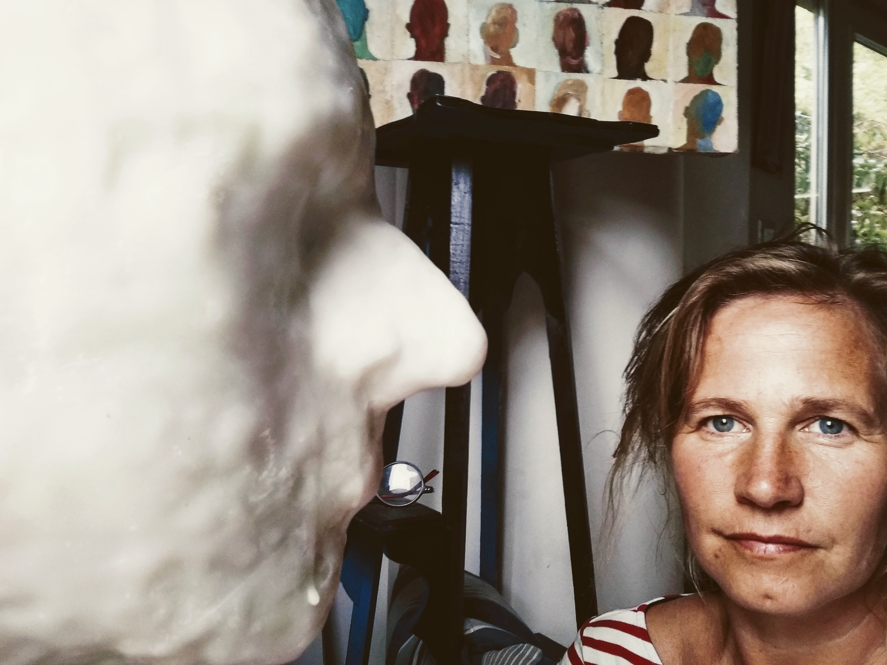
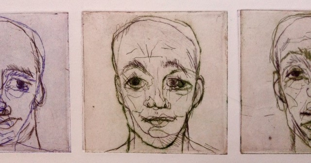

About me
Shapes and shadows that reflect a body mass, subtly hiding the truth of whom we really are. What we amass, acquire from each other, even from ourselves remains fuzzy. The veiled truth in each one of us is like a mist of variable densities. The human being is full of emotions which leads mankind to react in contradictory, strangely and/or amazing ways. I seek to express this depth down truth using paper as a medium. I appreciated working paper for its variety of textures; sometimes rough, sometimes smooth but also for its solidity as well as for its weakness. Paper has a significant place in my art work. My experience working paper grants me the right channel to bring to you a closer image of whom we are. Usually I give the floor to the paper with engraving, oil paint and with wax sculptures.
Expositions

2018 - Sister Art, Bruges, Belgium
2014 - Biennale d'Art de Jodoigne, Belgium
2013 - Rodéart, Belgium
2013 - 13' Promenade des Artistes Chastre, Belgium
2013 - 33' Miniprint International of Cadaques, Spain
2012 - Week-end chez l'Artisan d'art, Nivelles, Belgium
2012 - Parcours d'Artistes de Jodoigne, Belgium
2012 - Exposition d';art par le Patrimoine Stéphanois, Court-st- Etienne, Belgium
2012 - Kunst Kleurt Tuinen, Gent, Belgium
2010 - "L'art au secours de l'habitat", Brussels
2010 - INTA Art Show, Boston, USA
2007 - Pascal Karp Gallery, Brussels, Belgium
2000 - Art exhibition, European Patent Office, Munich, Germany
1999 - Kunstogenblik,Gent , Belgium
1995 - Palmares Renaissance, Herstal, Belgium
1995 - Palmares Renaissance, Brussels, Belgium
1994 - “Les Amis de Rosall”, Bierges, Belgium
1994 - Gallery Viqueray, Brussels, Belgium